OWASP Top 10:2025 - OWASP Juice Shop Web App Pentest
A hands-on web application penetration testing walkthrough, mapped to the current OWASP Top 10:2025 and demonstrated through the intentionally vulnerable OWASP Juice Shop - each challenge exploited by hand, explained down to its root cause, and written up as a severity-rated finding.
What is OWASP Juice Shop?
OWASP Juice Shop is an open-source, intentionally vulnerable web application maintained by OWASP. It is a modern single-page shop (an Angular front end on a Node.js/Express back end) deliberately seeded with dozens of real-world security bugs, from SQL injection and cross-site scripting to broken access control and cryptographic mistakes. Every bug is packaged as a "challenge" tracked on a hidden Score Board, which makes it a safe and legal target for practicing web application testing end to end. Because the vulnerabilities map cleanly onto the OWASP Top 10, it is one of the best environments to learn how each risk is found, exploited, and remediated.
This guide runs Juice Shop locally on Kali Linux and drives every attack through an intercepting proxy, exactly as you would against a real client's application, just against a target that is intentionally broken and legal to test.
Objective
This write-up is a guide to how each category of the OWASP Top 10 can be demonstrated in practice against a live web target. The goal is that it can be followed, or used as a reference, to understand why each item sits in the ten most critical web risks, how it is exploited, and how it would be remediated.
This write-up maps to the OWASP Top 10:2025, the current edition. The 2025 list reordered several risks and added new categories (Software Supply Chain Failures, and Mishandling of Exceptional Conditions). Here is the current list:
- A01 Broken Access Control - users acting outside their intended permissions.
- A02 Security Misconfiguration - insecure defaults, exposed features, missing hardening.
- A03 Software Supply Chain Failures - risk from third-party and dependency components (absorbs the old "Vulnerable & Outdated Components").
- A04 Cryptographic Failures - weak or missing protection of sensitive data.
- A05 Injection - untrusted input executed as code (SQLi, XSS, command injection).
- A06 Insecure Design - flaws in the design itself, not just the implementation.
- A07 Authentication Failures - weak login, credential, and session handling.
- A08 Software or Data Integrity Failures - trusting unverified data, updates, or tokens.
- A09 Security Logging & Alerting Failures - attacks that go undetected.
- A10 Mishandling of Exceptional Conditions - improper error handling that leaks internals or fails unsafely (new in 2025).
A second goal is that the report-writing and testing approach here can be reused when working with a real client on identifying flaws and recommending improvements in their application.
This guide is written in a Linux (Kali) environment. Juice Shop is run locally and all traffic is proxied through Burp Suite.
Methodology
Each section maps a Juice Shop challenge to its OWASP Top 10:2025 category. For every one we identify the vulnerability, exploit it by hand through the browser and Burp, explain the root cause (down to the vulnerable code where Juice Shop exposes it), and record a severity-rated finding:
- Recon & setup - run Juice Shop locally, proxy the browser through Burp, and fingerprint the stack (Angular front end, Node/Express back end) to know what protections exist by default.
- A01 Broken Access Control - IDOR on the basket endpoint.
- A02 Security Misconfiguration - a deprecated B2B (XML) upload interface left active.
- A03 Software Supply Chain Failures - a directly-used dependency with a known CVE.
- A04 Cryptographic Failures - a confidential document exposed in a browsable directory.
- A05 Injection - SQL injection authentication bypass and DOM-based XSS.
- A06 Insecure Design - registration validation enforced only on the client.
- A07 Authentication Failures - an OSINT-guessable password-reset question and a weak, brute-forceable admin password.
- A10 Mishandling of Exceptional Conditions - improper error handling / information disclosure.
- A08 & A09 - software/data integrity (unsigned JWT) and security logging & alerting failures (added as each is completed).
Tools Used
- Burp Suite Community Edition (intercepting proxy - view, replay, and tamper with requests)
- FoxyProxy (browser extension to route traffic through Burp)
- Firefox Developer Tools (inspect the DOM, session/local storage)
- Wappalyzer (fingerprint the front-end framework and back end)
- OWASP Juice Shop (the intentionally vulnerable target, run locally on Node.js)
- Kali Linux (host environment)
- OWASP Top 10:2025 (the standard findings are mapped to)
A01 - Broken Access Control
ChallengeView Basket (★★)
The challenge is to view another user's shopping basket by changing the basket ID. Let's make an account for the website.
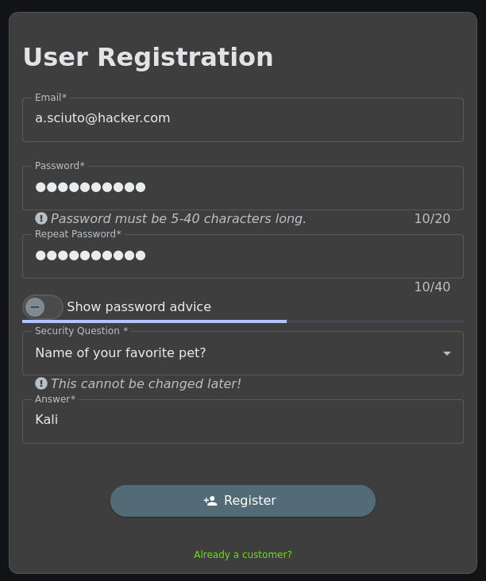
Next, let's add some items to our basket to confirm it's ours. For me, I added 12 Basil Smoothies as my unique basket, since I doubt another user has exactly that.
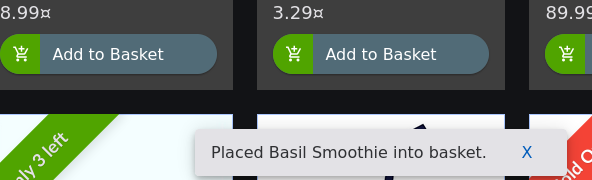
If we inspect the page and go to Storage, we can look around for any interesting values we can change.
Under Session Storage, I see a value called bid (basket ID) currently set
to 6.
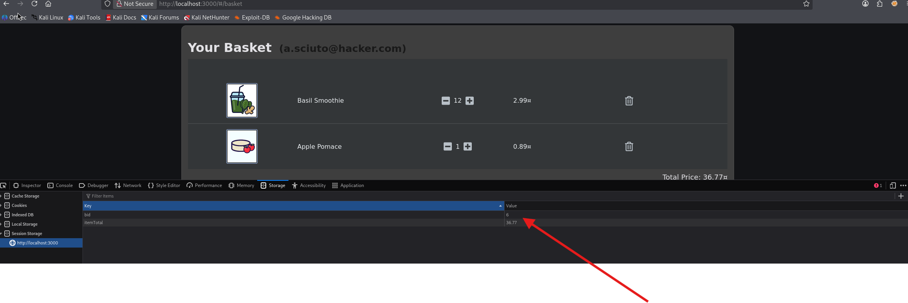
bid value in session storage.If we change it and refresh the page, let's see what happens.
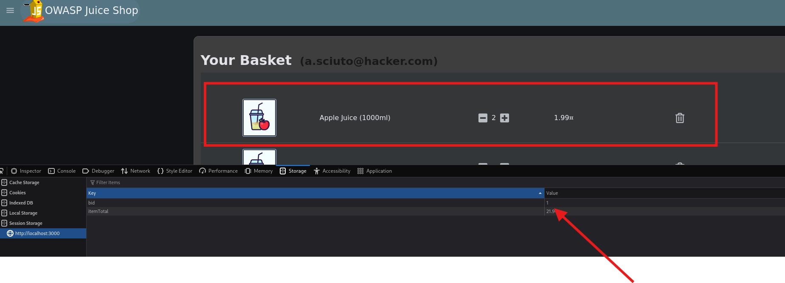
bid to another number.The basket contents changed, and we get some confetti with an achievement that we completed the challenge: View Basket!
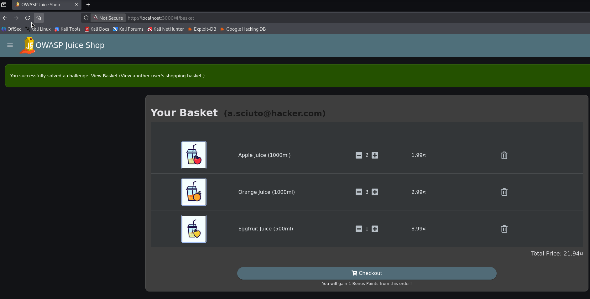
The server returns basket data for any basket ID we enter without checking whether we own that basket. The server trusts a client-supplied ID with no authorization check - the textbook definition of an Insecure Direct Object Reference (IDOR).
Replicating in Burp
Editing session storage is quick, but a purist could argue it's "just client-side tampering." Proving the same result at the HTTP layer shows the flaw is server-side and can't be dismissed. Let's turn FoxyProxy on, open Burp's Proxy tab, go to Juice Shop, and click the basket. Burp captures the request and we send it to Repeater.
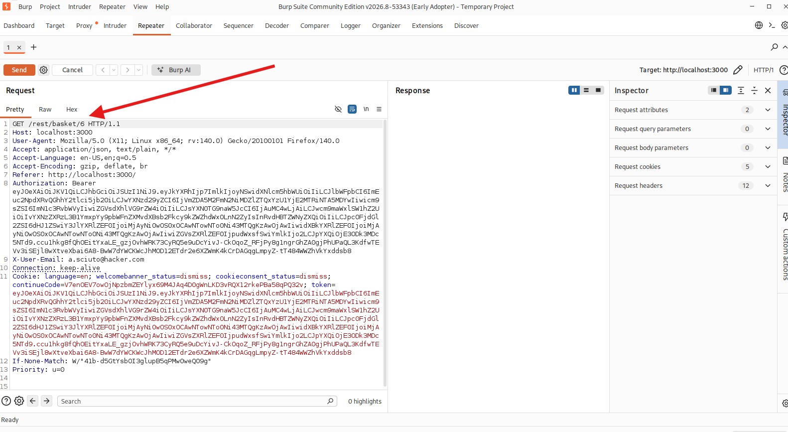
Here we see GET /rest/basket/6 HTTP/1.1. If we change the ID number and hit send, the
contents of the basket change just as they did earlier - straight from the server, with no session
storage involved.
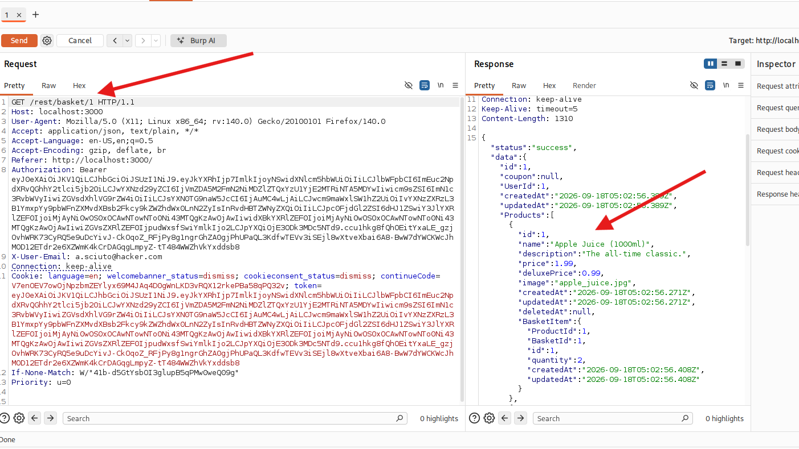
| Title | Insecure Direct Object Reference in Basket Retrieval |
|---|---|
| Category | Broken Access Control · OWASP A01:2025 · CWE-639 |
| Severity | High - unauthorized access to other users' data. |
| Description | The /rest/basket/{id} endpoint returns basket contents for any ID without verifying ownership. |
| Steps to reproduce | Log in, note your basket ID (session storage bid / the GET /rest/basket/{id} request), change it to another value, and the server returns a different user's basket. |
| Impact | Any authenticated user can view other customers' basket contents (privacy breach, customer data exposure). |
| Remediation | Enforce server-side authorization: verify the basket belongs to the authenticated user before returning it. |
A02 - Security Misconfiguration
ChallengeDeprecated Interface (★★)
The challenge wants us to use a deprecated, leftover B2B interface that should have been disabled.
What's a B2B interface?
B2B = business-to-business - companies dealing with one another, as opposed to B2C
(business-to-consumer). A B2B interface is a machine-to-machine hook that lets one company's system talk
to another's automatically, with no human clicking a website. Those legacy integrations historically ran
on XML. The story here is that the shop used to accept XML for some B2B feature, then "pulled
it away." This challenge focuses on what happens when they said they pulled it, but either forgot
to or did it improperly - leaving the interface open for customers, and anyone else, to still poke at.
Once we log in, a new item shows up in the hamburger menu on the left: Complain?
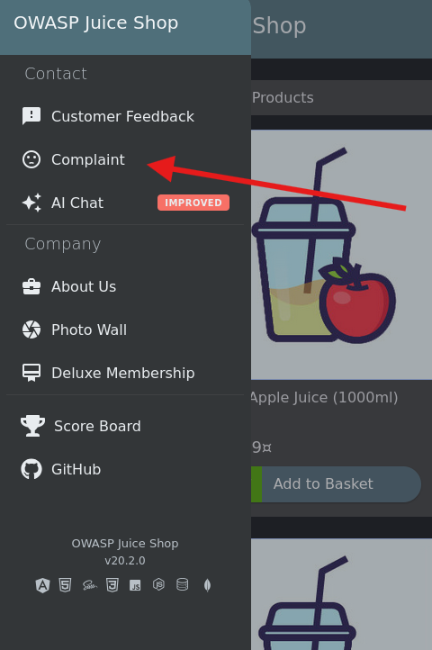
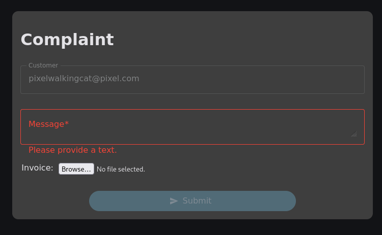
After clicking Browse..., I can see that "all supported types" is the default option on the file picker - it isn't actually restricting anything. So if we upload an XML file, we should be able to complete the challenge.
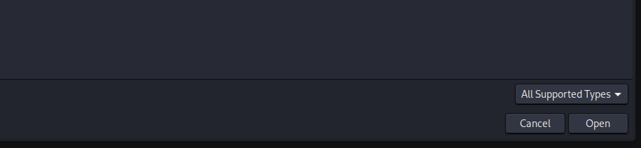
$ touch test.xml # create an empty .xml file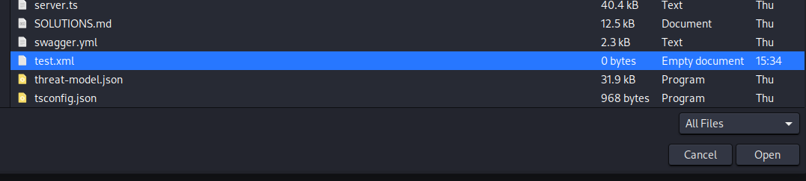
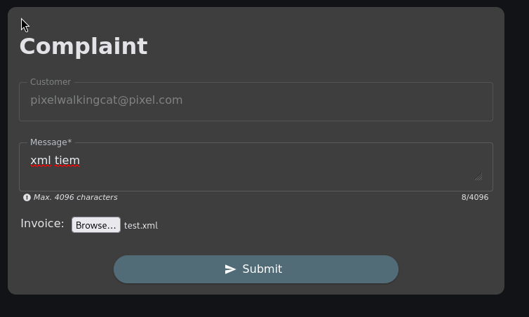
test.xml to the complaint.Upload the file and hit Submit.
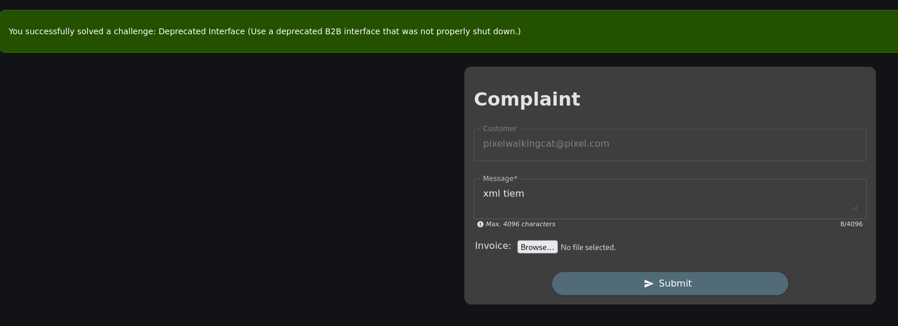
We solved the challenge, nice.
| Title | Deprecated / Unrestricted File-Upload Interface |
|---|---|
| Category | Security Misconfiguration · OWASP A02:2025 · CWE-16 / CWE-434 |
| Severity | Medium - a retired interface left active expands the attack surface (here it feeds directly into an XXE path). |
| How discovered | The File Complaint upload accepts arbitrary file types, including the deprecated XML format, with no server-side restriction. |
| Steps to reproduce | Log in, open File Complaint, attach any .xml file, and submit. |
| Impact | A deprecated B2B interface still processes input it shouldn't, keeping old and unmaintained code paths reachable by any user. |
| Remediation | Fully remove deprecated interfaces, not just from the UI; enforce a server-side allow-list of accepted file types and reject everything else. |
A03 - Software Supply Chain Failures
ChallengeVulnerable Library (★★★★)
The challenge: inform the shop about a high-severity vulnerability caused by one of its
directly used dependencies, mentioning the exact library name and version in a comment.
The link in the challenge brings us to http://localhost:3000/#/contact (Customer Feedback).
So we need to find a bundled third-party library with a known vulnerability, then report it to Juice Shop.
What's a JS library?
Using Wappalyzer, we can see the server runs Node.js with some JavaScript frameworks
(Angular and Zone.js). Instead of writing every piece of an app, people pull in
code others wrote and shared - a library for handling dates, one for input sanitization, and so on -
installed via npm install and called as functions. Juice Shop has tons of these. And because
it's running a pile of code made by a bunch of different people, it inherits their flaws too. Sometimes
libraries pull in other libraries, and five layers deep some guy made a mistake - and now it's
your mistake! That's the core idea behind A03 - Software Supply Chain Failures.
Finding it with retire.js
retire.js scans an app's JavaScript - the source, or the libraries the site loads in the
browser - figures out which libraries and versions are in use, and checks them against a database of
known-vulnerable versions. From that, it tells us which vulnerabilities it finds, for which library, at
which version.
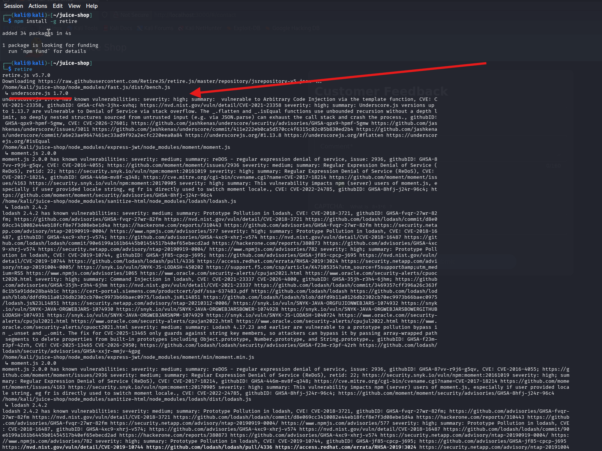
Our focus is a high-severity vulnerability, and out of all the results there's only one:
underscore.js 1.7.0. Let's report it and see what happens.
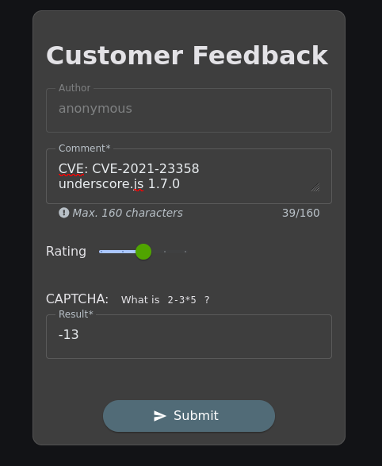
underscore.js 1.7.0 in the feedback form.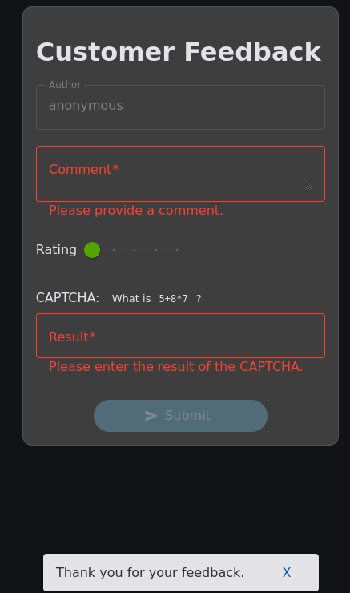
underscore.js 1.7.0 on its own didn't work either.Here's the catch, and it's worth remembering: the challenge asks about "directly used dependencies."
retire.js found us frontend libraries, which is genuinely useful, but the
library the challenge expects may live in the backend. So let's try another tool:
npm audit. Where retire.js asks "what vulnerable JS is this website serving to
us?", npm audit asks "what vulnerable packages are in this project's full dependency tree?"
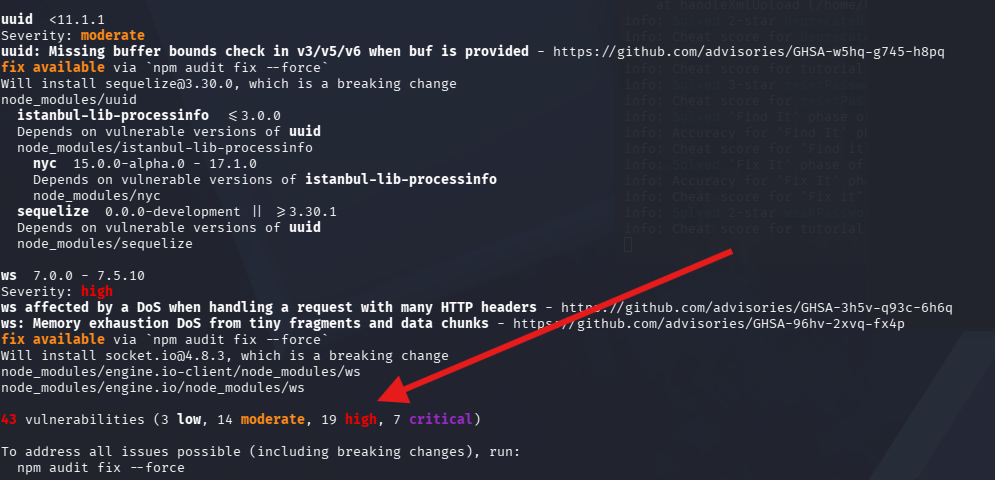
npm audit - a whopping 19 high-severity vulnerabilities.Now, we could bash our head on the keyboard brute-forcing them one by one, or we can triage. When I used to work in the medical field, triage was essential when dealing with a high number of casualties and injuries at the same time - you sort by what matters most. The key filter with these findings is direct vs. transitive: most of these are transitive, meaning they're deep dependencies-of-dependencies that Juice Shop never directly chose.
$ cd ~/juice-shop
$ npm audit --omit=dev # drop dev/build-tool noise (the challenge lib is a runtime dep)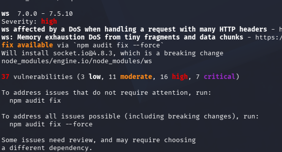
Let's try another command:
$ npm outdated # shows which direct deps are behind, and how far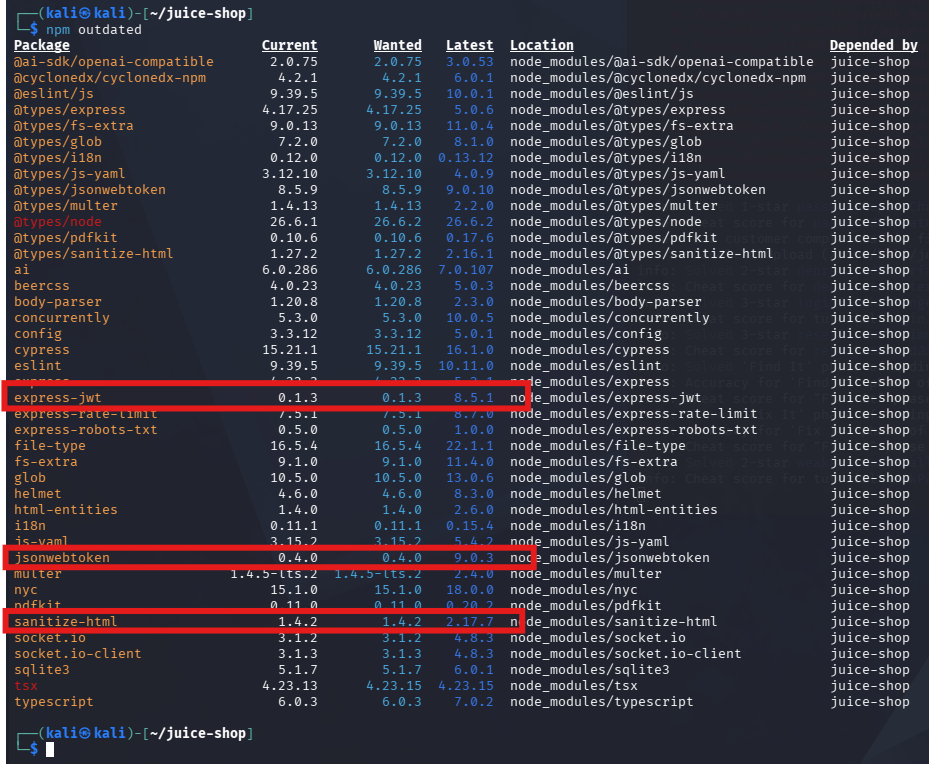
Three big mismatches stick out here. jsonwebtoken is currently at 0.4.0, but
its latest version is 9.0.3 - a HUGE difference. Right behind it, express-jwt and
sanitize-html are both embarrassingly far behind their latest updates. Let's try each of them
in the form, one by one.
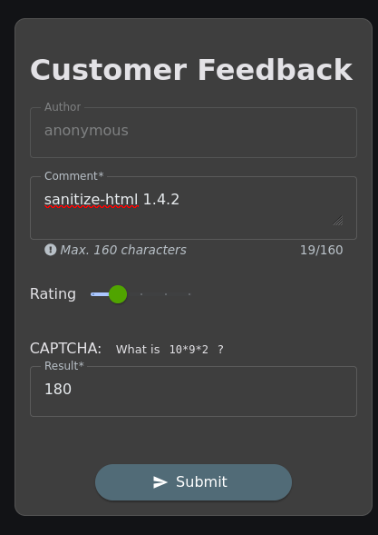
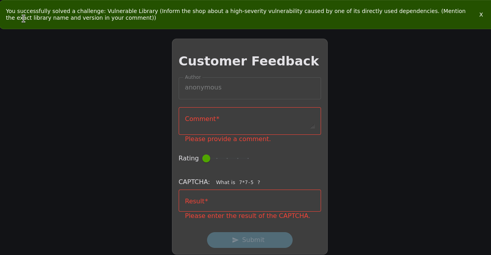
The answer was sanitize-html 1.4.2. Entered in the comment box with the correct captcha,
we got our achievement.
npm audit --omit=dev to drop build-tool noise, then npm outdated to surface
the biggest version gaps. A library frozen at 0.x while the world is on
9.x isn't "a bit stale," it's deliberately abandoned - and it's almost always both the
easiest to spot and the most likely to be genuinely dangerous. Reading that gap is the skill; no
keyboard-mashing required.
| Title | Use of Components with Known Vulnerabilities (sanitize-html 1.4.2) |
|---|---|
| Category | Software Supply Chain Failures · OWASP A03:2025 · CWE-1035 / CWE-937 |
| Severity | High - the app ships direct dependencies pinned to severely outdated versions with public CVEs. |
| How discovered | retire.js flagged a frontend lib (underscore 1.7.0); npm audit + npm outdated then surfaced backend direct deps frozen far behind current (jsonwebtoken 0.4.0, express-jwt, sanitize-html 1.4.2). |
| Impact | Known, publicly documented vulnerabilities are inherited directly by the application through its outdated dependencies. |
| Remediation | Upgrade dependencies to patched versions; wire automated dependency scanning (npm audit, Dependabot, retire.js) into CI; track and patch components on a schedule. |
A04 - Cryptographic Failures
ChallengeConfidential Document (★)
The goal here is to access a confidential file the shop meant to keep private. The trail starts on
the About Us page, where one of the links doesn't point at an in-app route but at a
file served straight off the server, inside a directory called /ftp.
After navigating to localhost:3000/ftp, we see a lot of interesting files. A lot of them
are tied to other challenges, but for this one we just want to prove Sensitive Data Exposure.
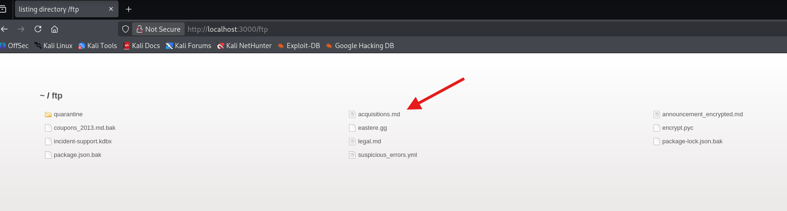
/ftp directory is browsable and full of files it shouldn't be handing out.Opening acquisitions.md, right at the top we see "This document is confidential! Do not
distribute!"
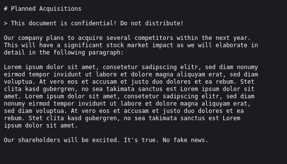
When we return to the main site, we see that just viewing that file got us the achievement.
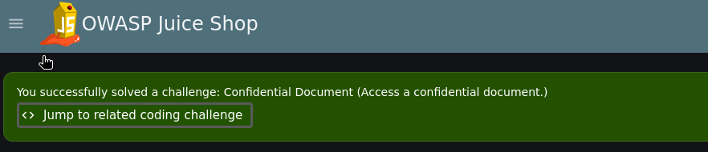
This is a pretty clean example of what Sensitive Data Exposure looks like: we saw a file we weren't supposed to see, and just like that, sensitive data was accidentally exposed to us.
It was never really "FTP"
That /ftp directory wasn't FTP at all. It's just a folder that happens to be named
ftp, and everything in it is served as static files over HTTP. So when we clicked
/ftp/acquisitions.md, we weren't touching an FTP server, we just made a web request and
the server said "ok, here you go." Two things went wrong:
- Confidential files should never live under a path a web server will hand out.
- Sensitive files should be served through an endpoint that asks "who's requesting this, and are they authorized?" - not dropped into a browsable static folder.
Juice Shop tags this as Sensitive Data Exposure, which in the 2025 Top 10 lives under A04 Cryptographic Failures - the category for sensitive data left unprotected. Worth being precise: it isn't an encryption bug itself, it's the broader "sensitive data isn't protected" idea.
| Title | Sensitive Document Exposure in /ftp Directory |
|---|---|
| Category | Cryptographic Failures / Sensitive Data Exposure · OWASP A04:2025 · CWE-538 / CWE-200 |
| Severity | Medium (as tested) - trivially reachable with no authentication, but the file is placeholder content. Rises to High if the directory holds genuinely sensitive material; the doc claims to be M&A plans, and real material non-public info would carry regulatory / insider-trading impact. |
| How discovered | An About Us link pointed into /ftp; the directory is served as browsable static files, and acquisitions.md was directly downloadable. |
| Steps to reproduce | Browse to /ftp/acquisitions.md (browser or curl) - no authentication required. |
| Impact | Any unauthenticated user can retrieve confidential files stored in the served directory. |
| Remediation | Keep sensitive files outside the web root; serve protected downloads through an authenticated, authorization-checked route; disable directory listing; never rely on path obscurity. |
A05 - Injection
ChallengeLogin Admin (SQL Injection) (★★)
The challenge is to log in as admin via SQL injection in the email field, using ' OR 1=1--.
Login forms are the textbook SQLi target: our input is put into a database query that checks our
credentials. The quickest confirmation is to put a single quote in the field. If it errors out, that
tells us our quote is breaking the query's syntax - meaning our input is being treated as code, not
data.
First, let's log out if we're already logged in. Next, let's test for SQL injection in the email
field. The challenge tells us to use ' OR 1=1--, so let's try that with a random password of
test.
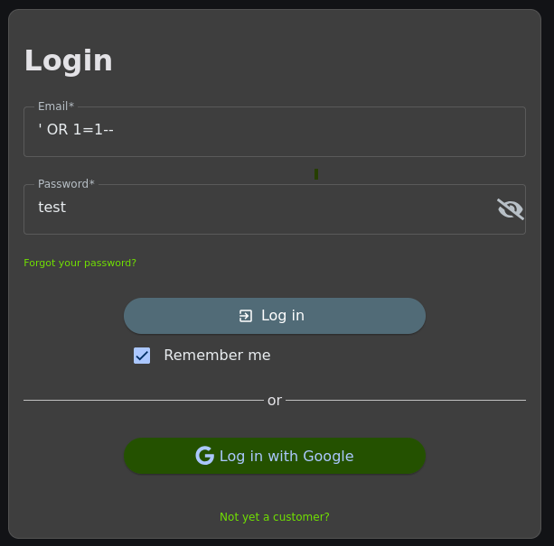
' OR 1=1-- in the email field.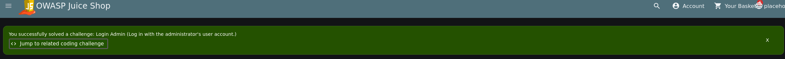
We got the achievement and completed the challenge. We can confirm by looking at our profile details: we're logged in as the admin account.
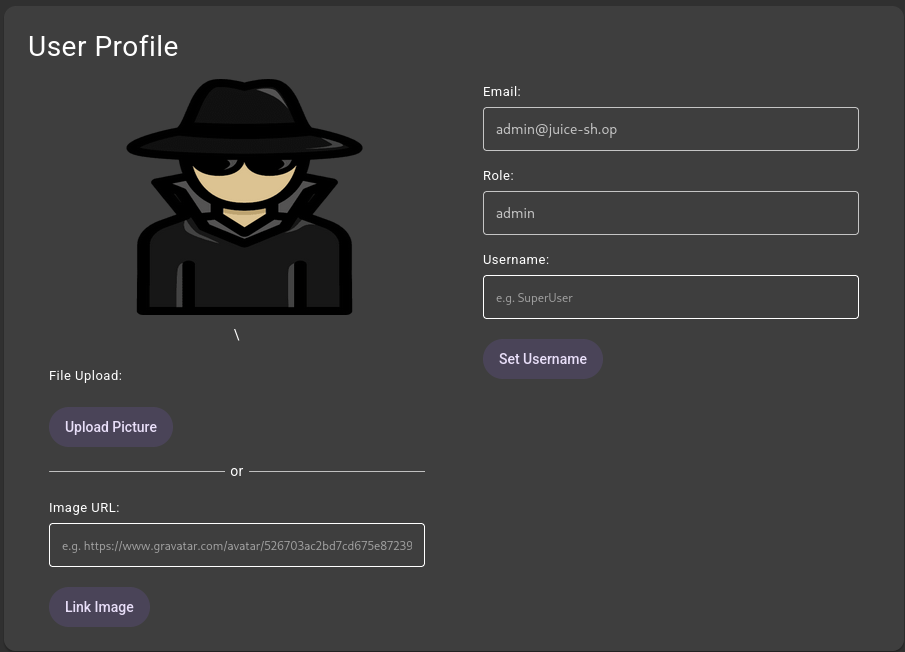
admin@juice-sh.op.The app concatenated our input directly into the SQL string instead of using parameterized queries. If
it were parameterized, ' OR 1=1-- would just become a search for an email literally equal to
the string ' OR 1=1--, which is nobody.
Why did ' OR 1=1-- work?
When anyone tries to log in, the server builds a query something like this:
SELECT * FROM Users WHERE email = 'INPUT' AND password = 'INPUT' AND deletedAt IS NULLWhen we enter ' OR 1=1-- in the email field, it becomes:
SELECT * FROM Users WHERE email = '' OR 1=1--' AND password = '...' ...What each part does:
'- closes the opening quote, soemail = ''(empty). This is us breaking out of the data and into the query's logic.OR 1=1- a condition that is always true. Because it'sOR, the wholeWHEREclause is now true for every row in the Users table.--- an SQL comment. It comments out the rest of the query, theAND password = '...'part, so the password check is completely ignored. That's why our password oftestdidn't matter.
How did we become admin from this?
The query returns all users (the condition is always true), and the app logs us in as the first row
returned - in this case the administrator (admin@juice-sh.op).
We can also target a specific user, for example victim@email.com'--. We can even try it
with our own registered email but a completely different password, and still log in. Let's enter
a.sciuto@hacker.com'-- as the email and hehe as the password. My password is
not hehe, but if the vulnerability is present (as we confirmed), it should log me
in:
SELECT * FROM Users WHERE email = 'a.sciuto@hacker.com'--' AND password = 'hehe'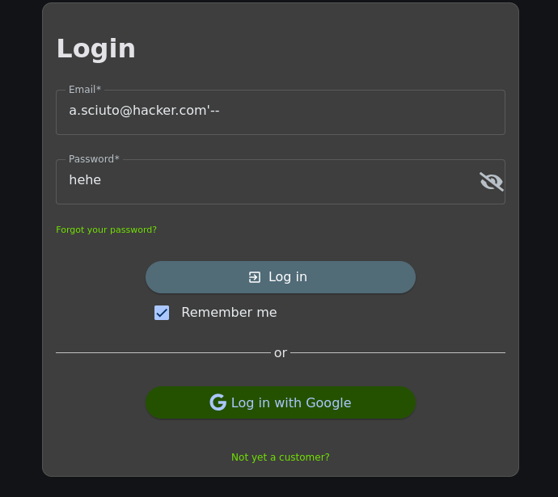
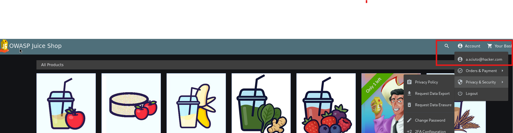
As further proof, we can find a user's email in one of the product reviews and log in as them:
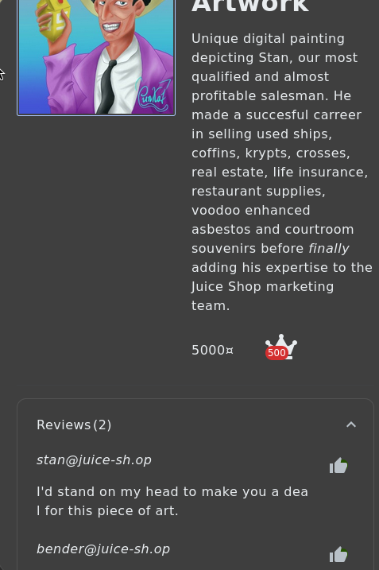
I like Futurama, so let's log in as bender with the email
bender@juice-sh.op'-- and a random password of shinymetal.
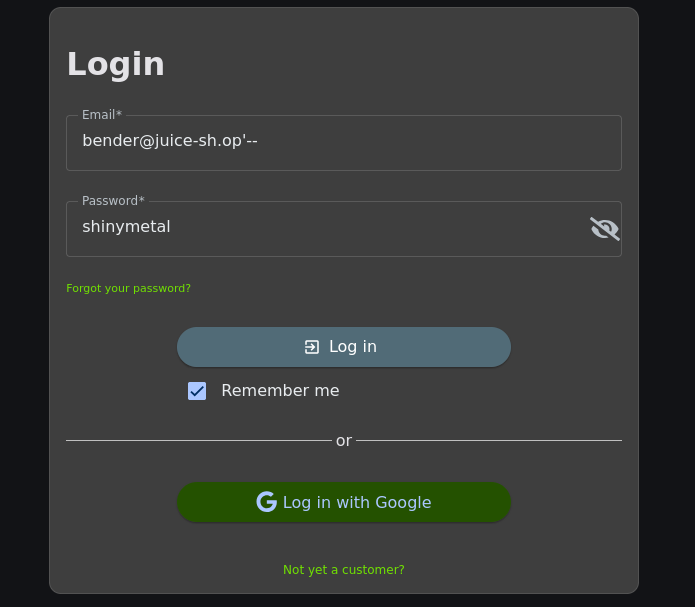
| Title | SQL Injection in Login (Authentication Bypass) |
|---|---|
| Category | Injection · OWASP A05:2025 · CWE-89 |
| Severity | Critical - full authentication bypass, admin access. |
| How discovered | Submitting ' in the email field caused a SQL error, confirming the input is concatenated into a query. |
| Payload | email = ' OR 1=1--, password = anything. |
| Why it works | The ' closes the email string, OR 1=1 makes the WHERE clause always true, and -- comments out the password check. The query returns all users and logs in as the first (admin). |
| Impact | Any attacker can log in as any user, including admin, with no valid credentials. |
| Remediation | Use parameterized queries / prepared statements so input is treated as data, not code. Add input validation and least-privilege database accounts. |
ChallengeDOM-Based Cross-Site Scripting (XSS) (★)
The search bar is right on the main page, so let's enter our DOM XSS payload and hit enter:
<iframe src="javascript:alert(`xss`)">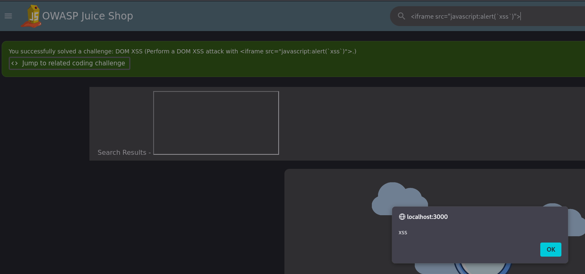
DOM XSS vs Reflected / Stored XSS
With Reflected or Stored XSS, the payload goes to the server and comes back in a response. With DOM XSS, the payload never reaches the server: the front-end JavaScript reads our input (from the search box or URL) and writes it into the page's DOM itself. The vulnerability lives entirely in the client-side code.
A note on the payload: <script> won't execute when inserted via innerHTML
(per the HTML5 spec, scripts added that way don't run), so we use an alternative vector - an
<iframe> with a javascript: URI.
Root cause shown in the code
Juice Shop attaches a coding challenge to this bug. It shows the vulnerable source and asks us to "click the line(s) containing the vulnerability."
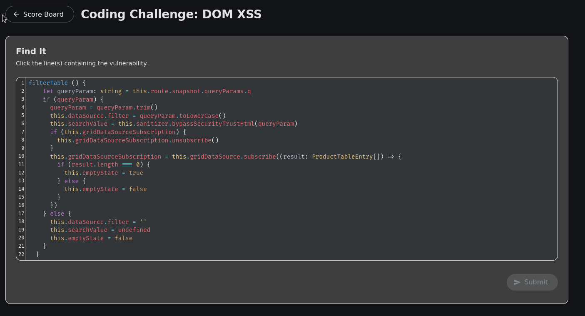
filterTable() code.Line 2 is the source - where untrusted input enters:
let queryParam = this.route.snapshot.queryParams.qThis reads the q parameter directly from the URL, which we control. Line 6 is the
sink - where the payload does damage:
this.searchValue = this.sanitizer.bypassSecurityTrustHtml(queryParam)It takes the untrusted queryParam and calls bypassSecurityTrustHtml, which
tells Angular (the front-end framework) to treat it as safe HTML and not sanitize it. searchValue
is then rendered into the page as HTML. Angular normally auto-escapes everything - which is why Angular
apps are generally XSS-safe - but this line switches that protection off for attacker input. (We can use
Wappalyzer to confirm Angular and research how it normally keeps XSS safe.)
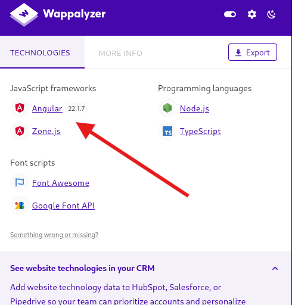
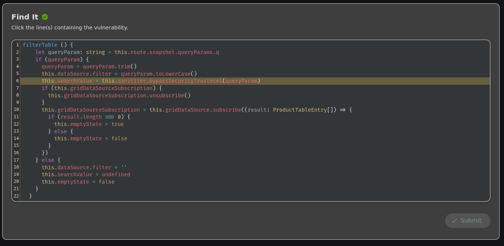
Fix It
After choosing line 6, we pick the code that would have prevented the vulnerability. The four options each keep the same method but change that one line:
Fix 1: this.searchValue = this.sanitizer.bypassSecurityTrustResourceUrl(queryParam)
Fix 2: this.searchValue = queryParam
Fix 3: this.sanitizer.bypassSecurityTrustScript(queryParam)
Fix 4: this.sanitizer.bypassSecurityTrustStyle(queryParam)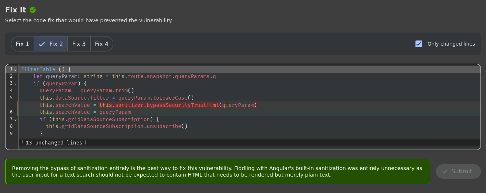
The correct answer is Fix 2. Juice Shop's own explanation: "Removing the bypass of sanitization entirely is the best way to fix this vulnerability. Fiddling with Angular's built-in sanitization was entirely unnecessary as the user input for a text search should not be expected to contain HTML that needs to be rendered but merely plain text."
- Fix 1 →
bypassSecurityTrustResourceUrl- still bypasses sanitization, just for URLs. Still trusts attacker input. ✗ - Fix 2 →
this.searchValue = queryParam- removes the bypass entirely and assigns the plain string. Angular's default auto-escaping now neutralizes the payload. ✓ - Fix 3 →
bypassSecurityTrustScript- bypasses for the script context. Arguably the worst option. ✗ - Fix 4 →
bypassSecurityTrustStyle- bypasses for style. Still a bypass. ✗
The fix is to simply stop bypassing and let the framework do its default escaping.
| Title | DOM-Based Cross-Site Scripting in Search |
|---|---|
| Category | Injection (XSS) · OWASP A05:2025 · CWE-79 |
| Type | DOM-based (payload rendered client-side, no server round-trip). |
| Payload | <iframe src="javascript:alert(`xss`)"> in the search field. |
| Why this vector | <script> won't execute via innerHTML, so an iframe javascript: URI is used. |
| Root cause | The front end bypasses Angular's HTML sanitization (bypassSecurityTrustHtml) on an untrusted URL parameter (source line 2 → sink line 6). |
| Impact | Attacker-controlled JavaScript runs in the victim's session - session/JWT theft, account takeover, phishing redirects - delivered via a crafted search URL. |
| Remediation | Use framework-default output encoding; never bypass the sanitizer. Add a Content-Security-Policy as defense-in-depth. |
A06 - Insecure Design
ChallengeEmpty User Registration (★)
Navigating to the registration form, we see we have to enter something to register an account. But the challenge wants us to register with an empty email and password.
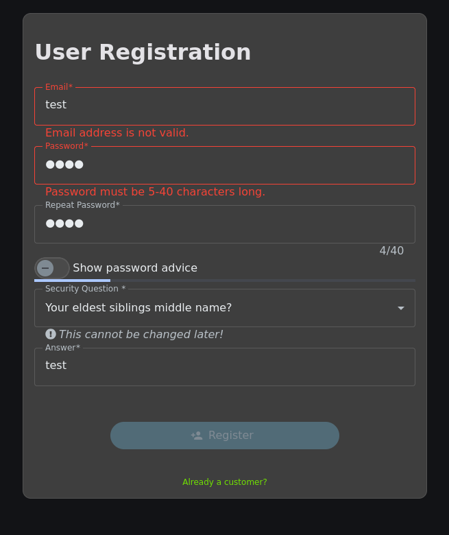
This sounds like a job for Burp Suite - because that validation is running in the browser, not on the server.
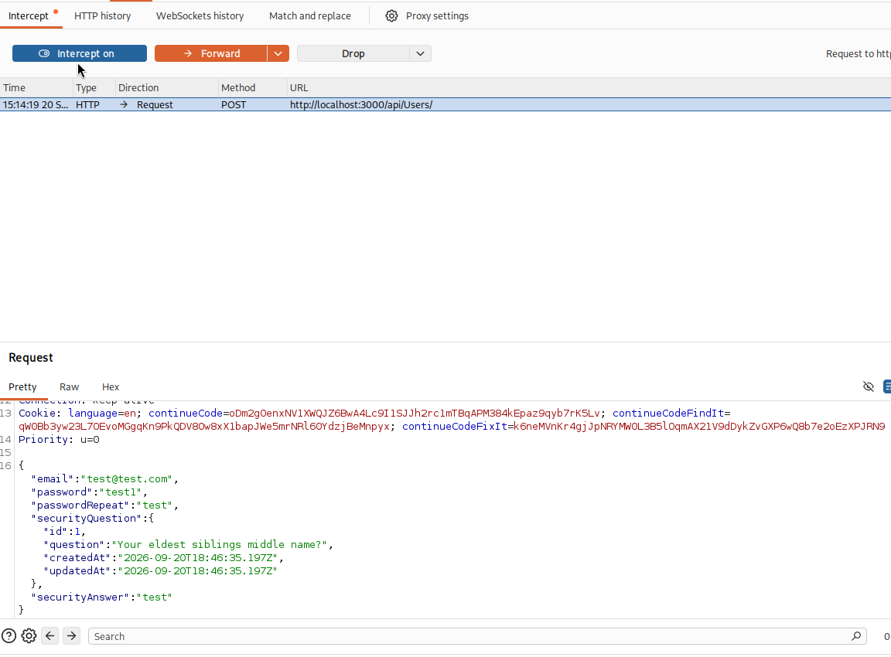
POST in Burp.We capture the POST request and send it to Repeater.
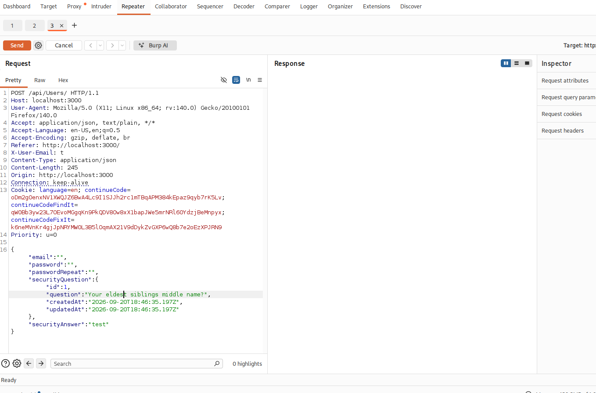
Our intended email and password values are there, so what if we just remove them and hit Send?
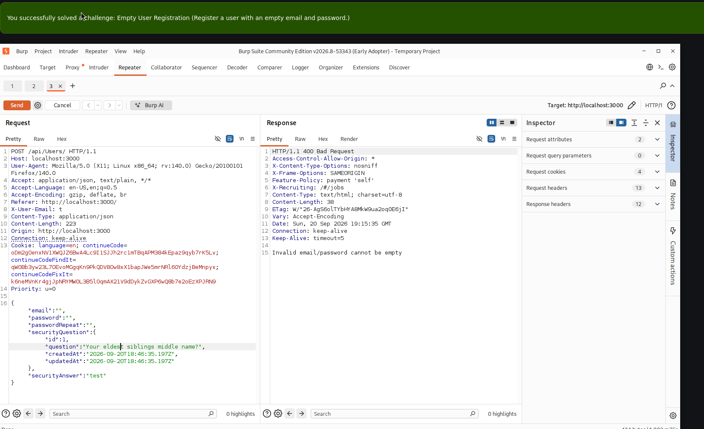
Well, it successfully registers and we get our achievement is what happens.
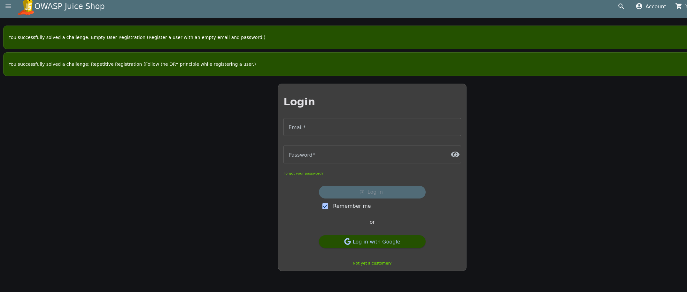
And look - we accidentally got another achievement at the same time:
Repetitive Registration (Follow the DRY principle while registering a user). The
registration form makes us repeat our password in a passwordRepeat field, but the server
never checks that they even match! The password-confirmation check is enforced only in the browser; the
backend just ignores it.
| Title | Client-Side-Only Validation on User Registration |
|---|---|
| Category | Insecure Design · OWASP A06:2025 · CWE-602 (Client-Side Enforcement of Server-Side Security) / CWE-20 |
| Severity | Low - creates invalid/inconsistent account state rather than direct compromise; the value is in exposing the pattern of trusting client validation. |
| How discovered | Removing the email/password (and mismatching passwordRepeat) in the intercepted registration request still created the account. |
| Impact | Accounts can be created in states the UI forbids - blank credentials, unconfirmed passwords - which can break downstream logic and assumptions. |
| Remediation | Enforce all validation server-side (required fields, format, password match); treat client-side checks as UX only. |
A07 - Authentication Failures
ChallengeLogin Jim (★★★)
Not strictly an authentication failure, but we may as well knock out the easy achievement while we're here, no? Just like we logged in as Bender earlier with SQLi, let's do the same for poor Jim.
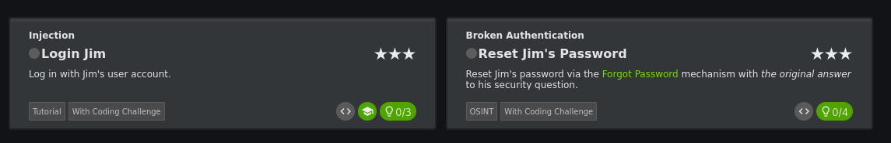
Just in case we don't already know Jim's email, we search the site's reviews to find it, exactly as we did with Bender's.
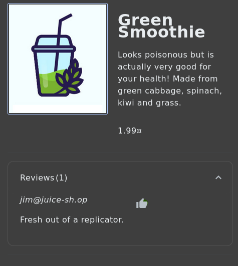
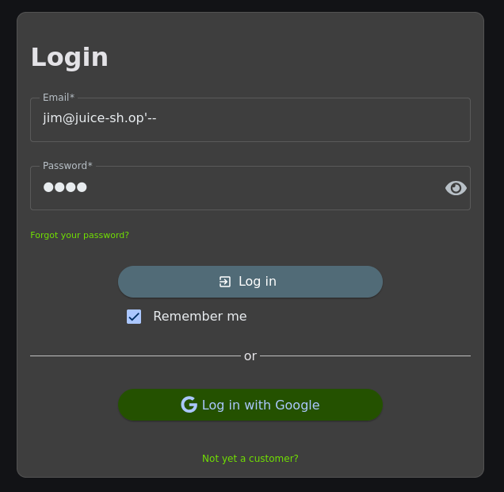
jim@juice-sh.op.Logging in with jim@juice-sh.op'-- and any password:
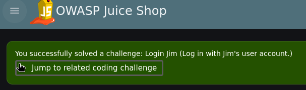
ChallengeReset Jim's Password (★★★)
This is our first challenge highlighting a real A07 - Authentication Failure. If you followed along and did the previous challenge, log out as Jim to start this one.
Go to the login page and choose the Forgot your password? option.
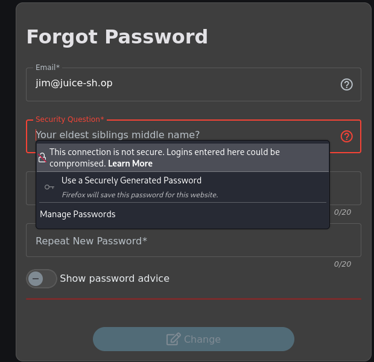
We notice something interesting right away: when we enter a valid registered user's email, their security question is shown to us. We obviously don't know Jim's answer, but we can see it's asking for a middle name - and we may also have noticed a theme, that a lot of the users on this site are named after famous media franchises.
This challenge has now become an OSINT (Open Source Intelligence) problem. What if we Google or research Jim the way we'd investigate an employee at a company for a report? From that Green Smoothie review, Jim mentions "Fresh out of a replicator."
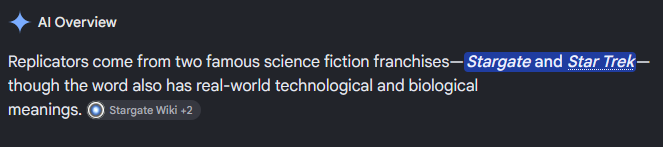
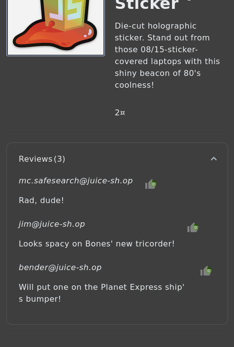
We can find another review, on the OWASP Juice Shop Holographic Sticker: "Looks spacy on Bones' new tricorder!"
This might be a bit overkill at this point, especially for fans of the show, but by piecing all these reviews together - who and what Jim references - we can paint a picture of his friends, family, job, and world. Now that we know "Jim" is the nickname of James Kirk, we can look up his relatives.
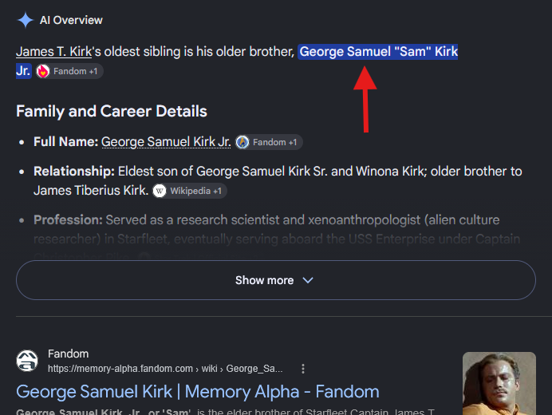
Once we enter that in, along with our new password, we get...
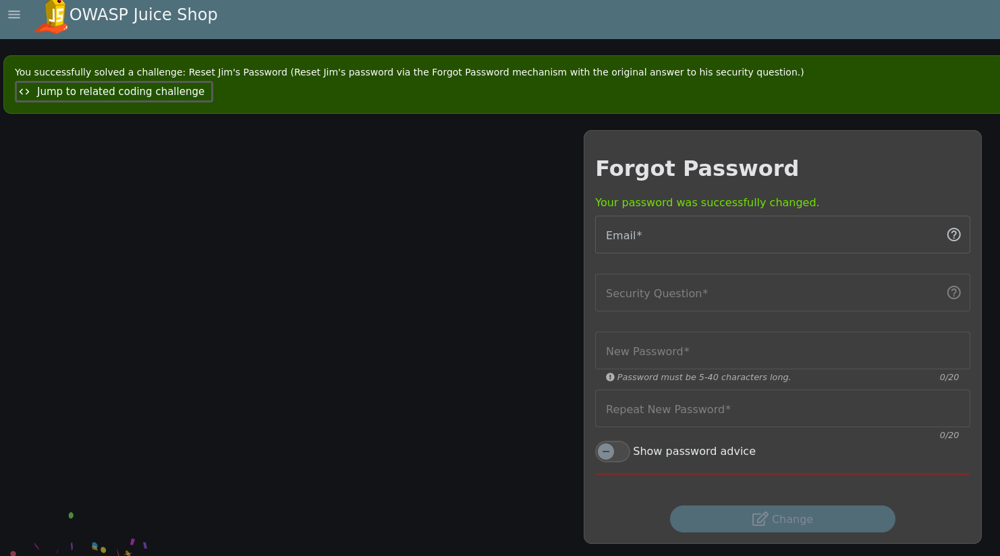
| Title | Account Takeover via Knowledge-Based Security Question |
|---|---|
| Category | Authentication Failures · OWASP A07:2025 · CWE-640 (Weak Password-Recovery Mechanism) |
| Severity | High - full account takeover of any user whose identity can be researched. |
| How discovered | The forgot-password flow reveals a user's security question by email and accepts an OSINT-derivable answer to set a new password. |
| Impact | Any account (including staff) can be taken over by researching public information about the account holder. |
| Remediation | Remove security questions; use time-limited, single-use reset tokens delivered to a verified email/phone; never reveal whether an email is registered. |
ChallengePassword Strength (★★)
This is our second A07 example, and a completely different attack. We've logged in as admin
before via injection (just like Bender and Jim), but as the challenge states: no SQLi this
time. This one only works because the admin chose a weak password.
First, let's intercept the POST for logging in as admin, with Burp and FoxyProxy.
POST /rest/user/login for admin@juice-sh.op.Method A - Burp Intruder
Burp Intruder can help us brute-force our way into finding a user's (or admin's) password.
- Step 1 (red arrow) - highlight the password value inside the double quotes.
- Step 2 (orange) - press Add §. This wraps the value in markers so Intruder knows where to insert each payload.
- Step 3 (green) - load in your payload wordlist.
- Step 4 (pink) - start the attack!
Once we get a hit with a 2xx status code - a successful login returns a token, so it's
also a noticeably longer response than the 401 failures - we've found our match and can log
in with it.
Method B - ffuf
ffuf isn't throttled, so it rips through the same list far faster:
$ ffuf -w /usr/share/wordlists/fern-wifi/common.txt \
-X POST -H "Content-Type: application/json" \
-d '{"email":"admin@juice-sh.op","password":"FUZZ"}' \
-u http://localhost:3000/rest/user/login \
-mc 200 -cFUZZ is where each password gets substituted, and -mc 200 shows only the
successful login, so the one line ffuf prints is the answer.
To be honest, I tried about seven other lists before /usr/share/wordlists/fern-wifi/common.txt
worked. In retrospect, I probably could have guessed the password myself due to how simple it was... which
is really the whole point of the challenge.
| Title | Weak Administrator Password & No Anti-Automation |
|---|---|
| Category | Authentication Failures · OWASP A07:2025 · CWE-521 (Weak Password Requirements) / CWE-307 |
| Severity | High - full administrator compromise via unimpeded brute-force. |
| How discovered | Brute-forcing admin@juice-sh.op against a common-password list returned a 200 with a token; no lockout ever triggered. |
| Impact | An attacker recovers the admin password offline-fast and gains full administrative access. |
| Remediation | Enforce a strong password policy, add rate-limiting and account lockout on failed logins, and require MFA for privileged accounts. |
A08 - Software or Data Integrity Failures
ChallengeUnsigned JWT (★★★★★)
The goal is to forge an essentially unsigned JWT that impersonates the non-existing user
jwtn3d@juice-sh.op.
Step 1 - Log in and grab the JWT
For some reason I like logging in as Bender, so we'll do that again (via the SQLi trick from A05). On
any authenticated request our token rides in the Authorization: Bearer <token> header,
and it's also stored locally. Grab it from DevTools → Storage → Local Storage →
http://127.0.0.1:3000 → copy the token value.
Step 2 - Decode it
Paste the token into jwt.io to see its structure.
"alg":"RS256"; the payload holds a data object with our email.none, meaning
"this token is unsigned." A server that honors alg:none accepts a token with no signature and
trusts whatever payload we wrote. The token's integrity depends on the client-supplied alg
field - which we control.
Step 3 - Rewrite the payload
In the decoded payload there's an email field (currently bender@juice-sh.op).
That's what we replace with the challenge's non-existing user, jwtn3d@juice-sh.op.
Step 4 - Forge it by hand
A JWT is literally base64url(header) . base64url(payload) . signature - and if the
signature is left empty, it becomes an alg:none token. So we just base64url-encode two JSON
objects and join them with dots; no key needed, because "none" means "don't verify."
A-Za-z0-9-_) on
To Base64, or it adds = padding that breaks the token. (In my screenshots I forgot
this at first - so double-check it, and make sure the final token ends in a bare dot.)
Header - {"typ":"JWT","alg":"none"}:
eyJ0eXAiOiJKV1QiLCJhbGciOiJub25lIn0Payload (with the email replaced):
Then assemble by hand - header, dot, payload, dot, and nothing after the last dot (that empty slot is the missing signature):
eyJ0eXAiOiJKV1QiLCJhbGciOiJub25lIn0.eyJkYXRhIjp7...MTkwOX0.Step 5 - Deliver it
Paste the forged token into a whoami request's Authorization: Bearer in Burp
Repeater, or just overwrite the token in Local Storage and reload. I used the localStorage
route since it's a bit faster, though Burp gives you more freedom and a clearer view of the data.
| Title | JWT Signature Not Verified (alg:none accepted) |
|---|---|
| Category | Software or Data Integrity Failures · OWASP A08:2025 · CWE-347 (Improper Verification of Cryptographic Signature) |
| Severity | Critical - full authentication bypass and identity forgery; any user, including admin, can be impersonated with no credentials. |
| How discovered | Decoded the RS256 token, rebuilt it with alg:none and a chosen email, left the signature empty - and the server accepted it. |
| Why it works | The server trusts the client-supplied alg header. Setting it to none tells the server the token is unsigned, so it skips signature verification entirely. |
| Impact | An attacker forges tokens for arbitrary or non-existent users, bypassing authentication and authorization completely. |
| Remediation | Never accept alg:none. Pin the expected algorithm server-side (e.g. only RS256) and reject any token whose header algorithm differs; verify every signature against the trusted key. |
A09 - Security Logging & Alerting Failures
concept: running & hosting apps & content-discovery tools
ChallengeAccess Log (★★★★)
The goal is to gain access to any of the server's access log files. We've already explored everything
obvious on the site, so instead of typing random paths and hoping for a catch, directory brute-forcing is
the right call here - it maps out pages we can't see or aren't meant to reach (like the /ftp
and /score-board paths we found before).
gobuster nets us this message:
the server returns a status code that matches the provided options for non existing urls.
http://localhost:3000/8b63ecd0-... => 200 (Length: 9608). Please exclude the response length...gobuster's default trick is to treat real pages as 200 and missing ones as 404. But with Juice Shop being an SPA, that's useless - the server answers 200 to everything, even the random UUID gobuster tested. So it tells us to filter.
What is an SPA?
An SPA (Single-Page App) is exactly what it sounds like - an app that lives on one page. They're everywhere on the modern web: click around Gmail, Google Maps, Facebook, X, Discord, YouTube, or Juice Shop and the page updates instantly without a full reload. They're usually built on one of the three big frameworks - Angular (what Juice Shop uses), React, or Vue.
A traditional site is an MPA (multi-page app), where every link asks the server for a new HTML page and the browser reloads, with the server doing the rendering. In an SPA, the server sends one HTML shell plus a big JavaScript bundle a single time; after that, JS rewrites the page in our browser as we use it, and the server just serves that bundle and hands back raw JSON from API endpoints.
That means our real attack surface is the API - the /rest and
/api endpoints the SPA calls - plus the shipped JS bundle itself, which is fully readable in
the browser and often leaks hidden routes, endpoints, and logic. That's how the /score-board
and the DOM XSS sink turned up.
Two problems, and the fixes
First, the wordlists small enough not to crash our npm start instance didn't recurse into
subdirectories. Second, bigger wordlists crashed the dev server outright, no matter what filters and
throttling I added.
Every problem is a learning opportunity, so I switched two things: from npm to Docker
(the production image is far sturdier under load and self-heals with --restart=unless-stopped),
and from gobuster to feroxbuster (recursive by default, so it digs into directories it
finds instead of scanning one flat level). I broke both comparisons down in depth on the
Web & environments concept page - Docker vs npm, and every content-discovery
tool.
Back to dirbusting - and a wall
Even after the scan, feroxbuster gave us a pile of real paths but no /support.
Visiting it manually, it's there - so why isn't the tool designed to find pages finding it?
/support is nowhere to be seen.The answer is the very first line feroxbuster printed:
Auto-filtering found 404-like response and created new filter. It measured the SPA's catch-all
page (9393 bytes) and filtered anything matching it - which it has to, or every non-existent path would
show up as 200. But here's the catch that took me a while to see: /support by itself
returns that same catch-all. It's an Angular client-side route, not a real server directory, so
the server just hands back the same index shell it gives for garbage. Feroxbuster (correctly) filtered it
as 404-like - which means it never treated /support as a real directory, and so never
recursed into it to find /support/logs.
So how were we supposed to find it?
We already knew from /ftp that Juice Shop serves raw directory listings for real server
paths, and logs usually live under a support / admin / operations area. So instead of fighting the
scanner, we reasoned it out and requested http://localhost:3000/support/logs directly. It
returned a browsable listing of access logs - not the catch-all shell.
/support/logs.Open (download) a log file, then return to the shop for the achievement.
incident-support.kdbx file in /ftp has "support" in its name,
which is the (admittedly thin) hint toward the /support path.
/support is a path and guessing again that
/support/logs is where logs live. Yeah, you can infer it from findings across the site, but
it's a bit of a stretch.
| Title | Exposed Server Access Logs |
|---|---|
| Category | Security Logging & Alerting Failures · OWASP A09:2025 · CWE-532 / CWE-200 |
| Severity | Medium - access logs are readable by any unauthenticated user; logs routinely contain session tokens, emails, internal paths, and user activity. Rises to High if they carry live credentials/tokens. |
| How discovered | Directory enumeration was defeated by the SPA catch-all (the /support parent is filtered as 404-like); reasoned that logs sit under a support/admin area and requested /support/logs directly, which returned a browsable listing. |
| Impact | Log contents leak request data an attacker can weaponize (tokens in URLs, emails, endpoints) and map user activity; the deeper failure is logs being web-exposed rather than protected and monitored. |
| Remediation | Never serve log files over HTTP; store them outside the web root with restricted filesystem permissions; monitor and alert on access; strip sensitive data from logs. |
A10 - Mishandling of Exceptional Conditions
ChallengeError Handling (★)
A quick note on numbering: the 2025 Top 10 has a dedicated category - Mishandling of Exceptional Conditions (A10:2025) - that this finding maps to precisely, though it still overlaps with Security Misconfiguration.
When testing for A05 Injection, I actually completed this challenge first, before the SQLi one. In the email field, we can prove the app mishandles errors by entering a single quote and anything for a password:
Placing a single quote in the email field broke something server-side, and we received a raw,
unhandled error of [object Object] - a JavaScript error object that wasn't properly handled
or turned into a string. An app that reveals raw errors like this is not handling them "gracefully or
consistently" (as the achievement banner stated). Verbose/raw errors leak internal information - stack
traces, SQL error messages, framework details, object structures - anything that helps an attacker.
What is a stack trace?
A stack trace is the list of function calls that led to an error - the program showing the exact path it took right before it crashed. When code hits an error, the runtime prints the "call stack": which function was running, which function called it, which called that, and so on, usually with file names and line numbers. An example in Node.js:
Error: SQLITE_ERROR: near "OR": syntax error
at Database.query (/home/kali/juice-shop/build/routes/login.js:42:15)
at handleLogin (/home/kali/juice-shop/build/app.js:118:9)
...Stack traces can expose file paths and directory structure, the database and frameworks in use, line numbers, function names, and more - free reconnaissance for an attacker.
| Title | Improper Error Handling / Information Disclosure |
|---|---|
| Category | Mishandling of Exceptional Conditions · OWASP A10:2025 · CWE-209 (Information Exposure Through an Error Message). Overlaps A02:2025 Security Misconfiguration. |
| Severity | Low-Medium - information disclosure that aids further attacks. |
| How discovered | Submitting ' in the login email field produced an error rendered as [object Object] rather than a graceful message. |
| Impact | Raw error output can leak internal details (object structures, SQL errors, stack traces) that help an attacker map and exploit the app. |
| Remediation | Catch and handle errors server-side; return generic user-facing messages; log details internally, never expose raw errors or stack traces to the client. |
Conclusion
That's the full OWASP Top 10:2025 - every category demonstrated end to end against Juice Shop, each exploited by hand, explained down to its root cause, and written up as a severity-rated finding. The point was never just to collect achievements; it was to build a repeatable methodology and a report format I can reuse on a real client engagement.
The through-line across all ten is how ordinary most of them are. Almost none needed an exotic exploit - they came down to a handful of recurring mistakes:
- Trusting the client. Registration validation (A06) and the JWT signature (A08) were both enforced where the attacker sits. Anything the client decides, the attacker decides.
- Leaving sensitive things reachable. A confidential document (A04), the server access logs (A09), and a retired B2B interface (A02) were all just... served, to anyone who asked.
- Weak and guessable credentials. A brute-forceable admin password and an OSINT-able reset question (A07) - no exploit, just bad secrets.
- Not owning your dependencies. A known-vulnerable library shipped straight through (A03).
- Injection and access control - the classics - via SQLi and DOM XSS (A05) and basket IDOR (A01), plus verbose errors leaking internals (A10).
A few habits mattered more than any single trick: severity is what a finding actually authorizes, not how scary it sounds (a lab doc is Medium; a real one is High); scanners give you recall, you provide precision - triaging 19 "highs" down to the one that matters beats dumping all 19; and the environment shapes the attack - a SPA's catch-all can defeat brute-forcing entirely, and a dev server falls over under load that a Docker image shrugs off. When the tools hit a wall, reasoning is what got through.
Ten categories, ten findings, one methodology. On to the next target.